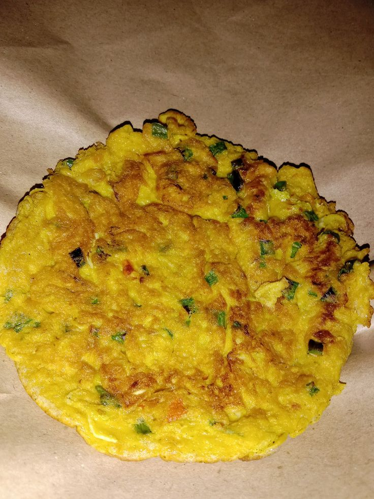

Telur Dadar Jamur

Deskripsi
Telur Dadar Jamur adalah hidangan sederhana namun lezat yang menggabungkan kelembutan telur dengan cita rasa gurih dari jamur segar. Telur dikocok hingga rata lalu dicampur dengan irisan jamur yang sudah dimasak atau ditumis, serta bumbu seperti garam, merica, dan bahan tambahan lain sesuai selera. Adonan ini kemudian digoreng di atas wajan hingga matang dan berwarna keemasan di kedua sisi, menghasilkan telur dadar yang lembut di dalam dan sedikit renyah di luar. Hidangan ini memiliki tekstur yang lembut dan rasa yang kaya dari jamur yang memberikan aroma khas dan rasa umami yang nikmat. Penampilan telur dadar jamur biasanya berwarna cokelat keemasan dengan potongan jamur yang terlihat jelas di dalamnya, menambah daya tarik visual dan rasa. Cocok disajikan sebagai menu sarapan, lauk pendamping nasi, atau camilan sehat yang praktis dan penuh rasa.
Bahan-bahan:
- 2 butir telur ayam
- 50 gr jamur kancing atau jamur tiram, iris tipis
- 2 siung bawang merah, iris tipis
- 1 batang daun bawang, iris tipis
- Garam dan merica secukupnya
- Minyak goreng secukupnya
Langkah-langkah:
- Pecahkan telur ke dalam mangkuk. Masukkan irisan jamur, bawang merah, dan daun bawang.
.
- Bumbui dengan garam dan merica secukupnya. Kocok lepas hingga semua bahan tercampur rata..
- Panaskan sedikit minyak goreng di wajan datar atau teflon.
- Tuang adonan telur ke wajan, ratakan. Masak dengan api kecil hingga bagian bawah matang dan berwarna keemasan.
- Balik telur dadar dengan hati-hati, masak hingga kedua sisi matang sempurna.
- Angkat dan sajikan selagi hangat dengan nasi atau roti.